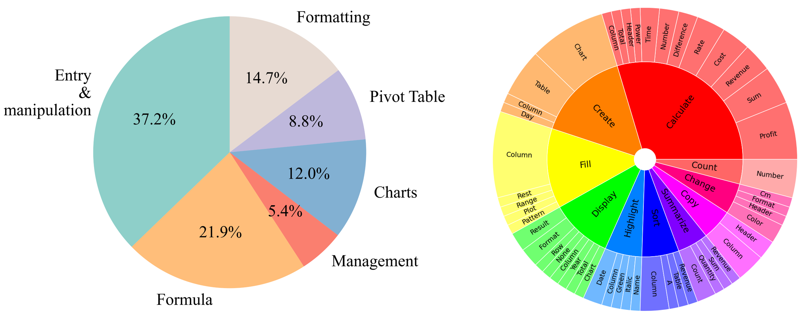
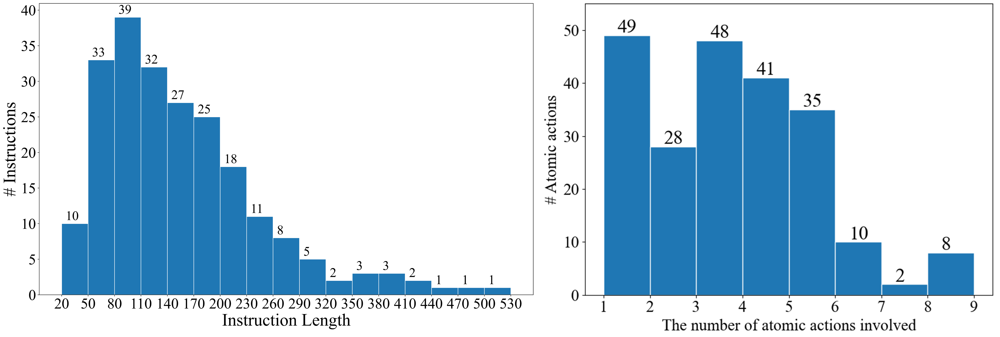

Bringing Software Productivity to the Next Level through Large Language Models
 Accepted to Neurip 2023
Accepted to Neurip 2023
Hongxin Li1,2*, Jingran Su3,4*, Yuntao Chen (project leader)3†, Qing Li4†, Zhaoxiang Zhang1,2,3,5†
1School of Artificial Intelligence, University of Chinese Academy of Sciences (UCAS)
2State Key Laboratory of Multimodal Artificial Intelligence Systems (MAIS), Institute of Automation, Chinese Academy of Sciences
3Centre for Artificial Intelligence and Robotics (CAIR), Hong Kong Institute of Science & Innovation, Chinese Academy of Sciences
4The Hong Kong Polytechnic University
5Shanghai Artificial Intelligence Laboratory
*Equal contribution.
†Equal advising.
SheetCopilot logo
Abstract
Computer end users have spent billions of hours completing daily tasks like tabular data processing and project timeline scheduling. Most of these tasks are repetitive and error-prone, yet most end users lack the skill of automating away these burdensome works. With the advent of large language models (LLMs), directing software with natural language user requests become a reachable goal. In this work, we propose a SheetCopilot agent which takes natural language task and control spreadsheet to fulfill the requirements. We propose a set of atomic actions as an abstraction of spreadsheet software functionalities. We further design a state machine-based task planning framework for LLMs to robustly interact with spreadsheets. We curate a representative dataset containing 221 spreadsheet control tasks and establish a fully automated evaluation pipeline for rigorously benchmarking the ability of LLMs in software control tasks. Our SheetCopilot correctly completes 44.3% of the tasks for a single generation, outperforming the strong code generation baseline by a wide margin.
See The Magic of SheetCopilot
SheetCopilot breaks new ground in human-computer interaction, opening up possibilities for enabling non-expert users to complete their mundane work on complex software (e.g. Google sheets and Excel) via a language interface.
SheetCopilot as An Interactive Add-on for Google Sheets
Demo 1: SheetCopilot helps users overcome over-complex formulas and highlight key data.
Demo 2: Just leave to make a coffe and let the SheetCopilot do the analytics and visualization work
Demo3: Let's make a pie!
SheetCopilot for Excel
You can easily connect SheetCopilot to Excel.
Demo 4: Plotting charts
Demo 5: Analyzing And Visualizing Sales Data
Demo 6: Managing Huge Tables over A Cup of Coffee (Thousands of rows)
Method
Overview
We maneuver SheetCopilot to control software such as Microsoft Excel, generate step-by-step solutions fulfilling the user's requirements. In each step, SheetCopilot plans an initial atomic action according to the sheet state and then revises this step using the external document which provides the action usage and examples. Finally, the action with its arguments is extracted from the revised step and submitted to the simulation environment for execution. The entire process on the right shows that SheetCopilot successfully solves the task specified in the instruction using the provided available atomic actions.
SheetCopilot State Machine
SheetCopilot utilizes a state machine-based planner which revises the plan according to the feedback from either external documnets or the software it controls. Our planner is divided into observing, proposing, revising, and acting stages. The state transition between these stages will be described below.
- Observing Stage. A brief description of the sheet state is added to the query, providing information such as the column headers and the number of rows. This helps to generate solutions in a closed-loop manner by observing the previous actions' consequences.
- Proposing Stage. The system prompt, task instruction, sheet state, and planning history are concatenated into one complete query, which is used to prompt the language model (e.g. GPT-3.5) to propose an atomic action
- Revising Stage. Two ways are adopted to revise the proposed atomic action: a feedback-based one and a retrieval-based one. Feedback-based revision utilizes the error feedback from both the action validation process and the spreadsheet software execution. Additionally, we use Retrieval-based revision to supply the model with detailed external action documents that does not fit in the system prompt due to the context window limit.
- Acting Stage. After the proposing and revising stages, the atomic action is submitted to the spreadsheet software for execution.
In the video below, we show how the synergy of the four stages brings us an amazing solution:
Dataset
We construct the SheetCopilot dataset, a high-quality evaluation benchmark as a foundation for assessing the spreadsheet control capabilities of various methods interested in this field, such as LLM-based methods and reinforcement learning-based methods.
The dataset contains 28 evaluation workbooks and 221 spreadsheet manipulation tasks applied to these workbooks. These tasks involve diverse atomic actions related to the six task categories (i.e. Entry and manipulation, Formatting, Management, Charts, Pivot Table, and Formula).
Dataset statistics:
1. Each task possesses one or more ground truth solutions.
2. The lengths of the task instructions range from 20 to 530 characters, with most tasks between 80 and 110 characters.
3. The numbers of atomic actions required by the tasks range from 1 to 9.
Evaluation metrics:
- Exec@1 measures the proportion of solutions executed without throwing exceptions.
- Pass@1 is used to evaluate functional correctness.
- Beyond correctness, we propose A50 and A90 scores to measure solution efficiency. These two metrics divide the number of atomic actions in a generated plan by the number in the ground truth and then calculate the 50th and 90th percentiles over all tasks. (Lower A50 and A90 scores indicate that the LLM tends to use fewer actions for completing a task.)

Dataset overview. An overview of our dataset in shown by the wordclouds of the instructions and involved atomic actions. The two clouds show that our dataset contains diverse tasks that involve various spreadsheet operations.

Left: The proportions of the six categories. Right: Diversity of the verb-noun phrases in the core set. We demonstrate the diversity of the core set by showing the top 10 most frequent root verbs (the inner circle) and their direct noun objects (the outer circle) in the instructions.

Dataset statistics. The distributions of the instruction lengths and the numbers of atomic actions involved in each instruction. The two histograms demonstrate the diverse task complexity of the core set.
A Detailed Example
SheetCopilot example: Handling sales data. The left column shows that SheetCopilot generates a step-by-step solution according to the sheet state feedback and correctly revises its mistakes using the external atomic action document as well as the error feedback. The incorrect arguments are marked with red rectangles. The right column demonstrates the state changes of the evaluation sheet corresponding to each step on the left. For illustration clarity, only brief documents are displayed.

Results
Exp. 1: Performances of three leading LLMs and a VBA-based method. The three LLMs exhibit impressive Exec@1 and Pass@1, with GPT-3.5-Turbo achieving the highest Exec@1 and GPT-4 obtaining the best Pass@1 and efficiency. With our method, GPT-3.5-Turbo outperforms the method that generates and runs VBA code by a large margin.
Exp 2: The four metrics shown in the above table are decomposed in the six task categories. The two GPT models both achieve 100% Exec@1 and Pass@1 in the Management and Entry & manipulation categories. The three models obtain their own best efficiency in different categories, suggesting that it is difficult for these models to excel in all task categories.
How to Use SheetCopilot
Please refer to our Github Repo to learn how to use SheetCopilot for Excel. If you don't want to bother with setting up the running environment, just go to GoogleSheets to install our SheetCopilot add-on. We stongly recommend that our users use SheetCopilot on GoogleSheets as this platform supports an Undo action.
Citation
Support
See the support page for how to install and use SheetCopilot for Google Sheets.
Privacy Policy
See the privacy policy of SheetCopilot as a GoogleSheets Add-on.
Terms of Service
See the terms of service of SheetCopilot as a GoogleSheets Add-on.